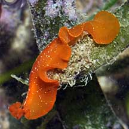
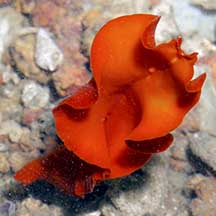
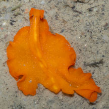
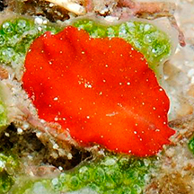

|
|
| flatworms text index | photo index |
| worms > Phylum Platyhelminthes > Class Turbellaria > Order Polycladida |
| Vermilion flatworm Phrikoceros baibaiye Family Pseudocerotidae updated Feb 2020 Where seen? This small brightly coloured flatworm is sometimes seen on coral rubble on some of our shores: mainly Chek Jawa and Cyrene Reef. More active at night, but sometimes seen moving about during the day. Usually, many individuals are seen, and then not seen again for a long time. Features: 3-4cm long. The small flatworm is plain red or orange (also described elsewhere as orange-brown or rusty) with tiny white dots all over the upper surface (underside uniformly plain without dots). The body margin is often highly ruffled and has no coloured margin. It has a pair of pseudotentacles that are squarish and ruffled on the sides, with white tips. There is a short white line at the head. The mouth appears to the near the centre of the underside of the body. Little flatworms are active and fast moving, often ruffling out from one crevice to another among coral rubble. They may even swim for a short distance with vigorous ripples of their body edges. When they are in season, some may be seen stranded on sand. Please watch your step! |
 Cyrene Reef, Jun 10 |
 Pulau Sekudu, Jul 05 |
 Pseudotentacles are squarish, ruffled on the sides, with white tips. |
| Vermilion flatworms on Singapore shores |
On wildsingapore
flickr
|
| Other sightings on Singapore shores |
 Changi Point, Nov 25 Shared by Marcus Ng on facebook. |
 Cyrene Reef, Aug 12 Photo shared by Lok Kok Sheng on his blog. |
Pulau Semakau, Aug 10, shared by Marcus Ng |
|
Acknowledgements
References
|